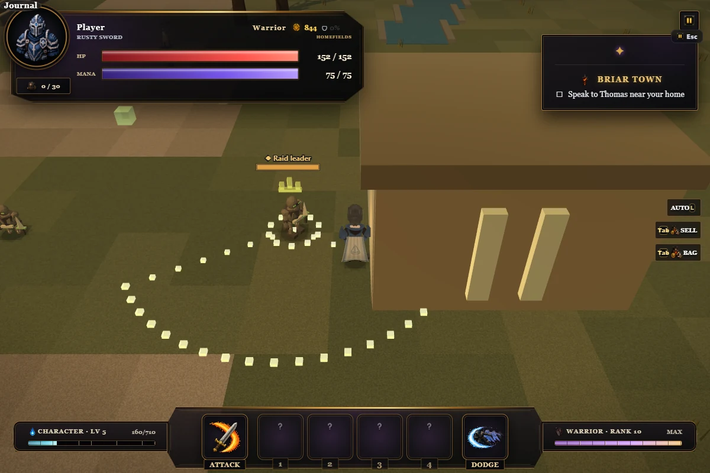
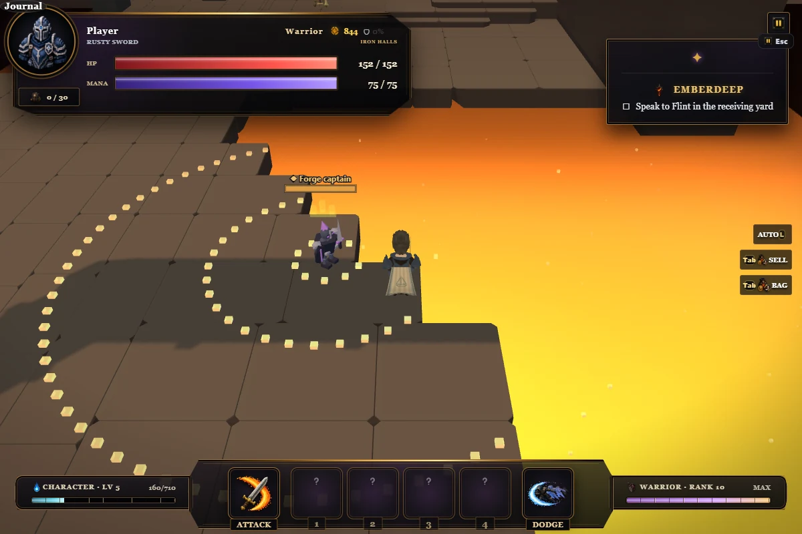
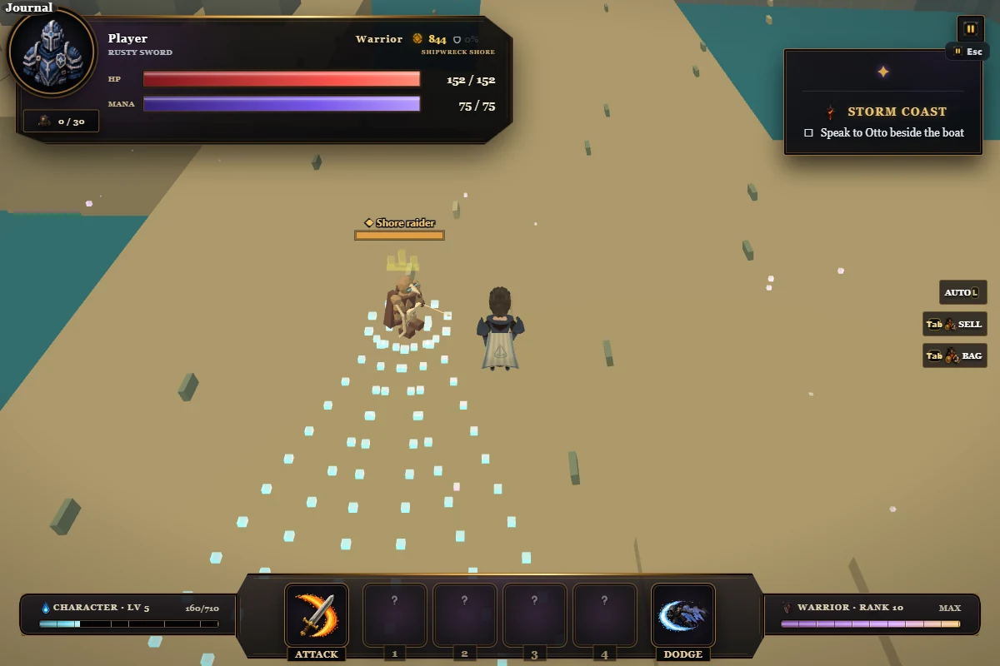
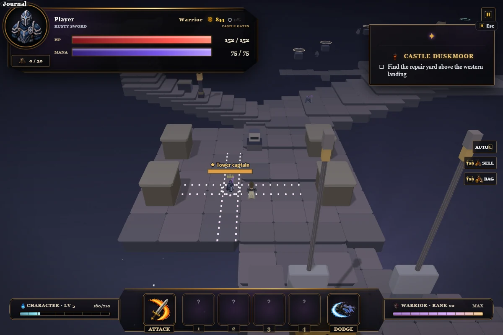

Named encounters
Four staged in-game previews of the new attack warnings. Tap a picture to view it full size. Each attack locks its aim and leaves an opening after it finishes.
Raid leader Briar Town

Step behind the wide sweep.Forge captain Emberdeep

Jump the moving ground pulse, or move outside its reach.Shore raider Storm Coast

Move between the three aim lines. The archer stands on the wide beach approach.Tower captain Castle Duskmoor

Move into a diagonal gap between the crossing lanes.Play Bladefall